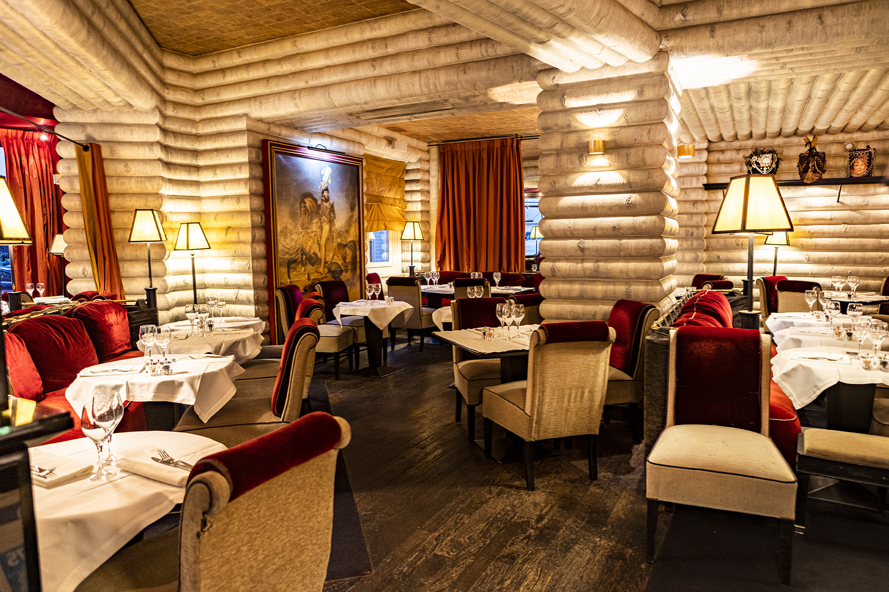

Bienvenue au restaurant Le Murat
Plat du jour
Carpaccio de flétan au foie gras et truffes

38 €
La cuisine, plus qu'une passion
Nous transmettons notre savoir-faire culinaire de générations en générations. C'est depuis 1910 que notre chic bistrot propose aux fines bouches parisiennes, des saveurs irrésistibles, grâce aux chefs les plus talentueux du pays. Nous cuisinons uniquement des produits frais du terroir français, sélectionnés avec soin. Venez faire passer un moment inoubliable à vos papilles gustatives dans notre restaurant décoré chaleureusement.
Les plats favoris de nos clients
|
Consommé de faisan aux cèpes et aux quenelles à la moelle 
|
Filets de soles et rougets au romarin et légumes 
|
Foie gras poêlé et chutney d'oignons 
|
|
Filet Mignon en Croûte au Foie Gras & Morilles 
|
Magrets de canard aux patates douces et cacao 
|
Pâtes fraiches au foie gras aux magrets et aux truffes 
|
|
Tartare de bar au gingembre 
|
Velouté de cèpes et châtaignes 
|
Homard grillé, sabayon au champagne 
|